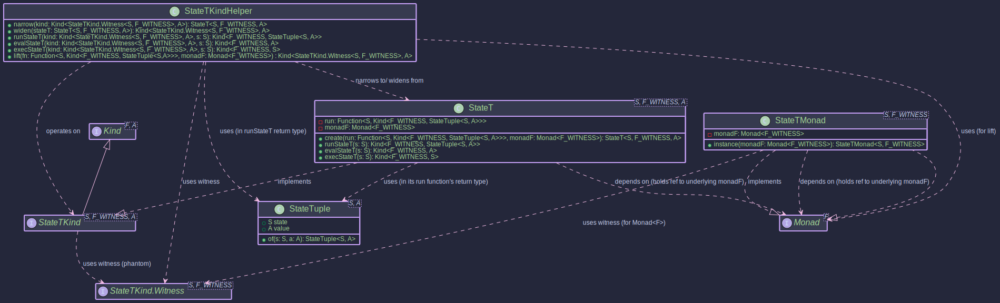

The StateT Transformer:
Monad Transformer
- How to add stateful computation to any existing monad
- Building stack operations that can fail (StateT with Optional)
- Understanding the relationship between State and StateT<S, Identity, A>
- Creating complex workflows that manage both state and other effects
- Using
get,set,modifyoperations within transformer contexts
The StateT monad transformer is a powerful construct that allows you to add state-management capabilities to an existing monadic context. Think of it as taking the State Monad and making it work on top of another monad, like OptionalKind, EitherKind, or IOKind.
This is incredibly useful when you have computations that are both stateful and involve other effects, such as:
- Potentially missing values (
Optional) - Operations that can fail (
Either,Try) - Side-effecting computations (
IO)
What is StateT?
At its core, a StateT<S, F, A> represents a computation that:
- Takes an initial state of type
S. - Produces a result of type
Aalong with a new state of typeS. - And this entire process of producing the
(newState, value)pair is itself wrapped in an underlying monadic contextF.
So, the fundamental structure of a StateT computation can be thought of as a function:
S -> F<StateTuple<S, A>>
Where:
S: The type of the state.F: The witness type for the underlying monad (e.g.,OptionalKind.Witness,IOKind.Witness).A: The type of the computed value.StateTuple<S, A>: A simple container holding a pair of(state, value).

Key Classes and Concepts
StateT<S, F, A>: The primary data type representing the stateful computation stacked on monadF. It holds the functionS -> Kind<F, StateTuple<S, A>>.StateTKind<S, F, A>: TheKindrepresentation forStateT, allowing it to be used withhigher-kinded-j's typeclasses likeMonad. This is what you'll mostly interact with when usingStateTin a generic monadic context.StateTKind.Witness<S, F>: The higher-kinded type witness forStateT<S, F, _>. Note that both the state typeSand the underlying monad witnessFare part of theStateTwitness.StateTMonad<S, F>: TheMonadinstance forStateT<S, F, _>. It requires aMonadinstance for the underlying monadFto function.StateTKindHelper: A utility class providing static methods for working withStateTKind, such asnarrow(to convertKind<StateTKind.Witness<S, F>, A>back toStateT<S, F, A>),runStateT,evalStateT, andexecStateT.StateTuple<S, A>: A simple record-like class holding the pair(S state, A value).
Motivation: Why Use StateT?
Imagine you're processing a sequence of items, and for each item:
- You need to update some running total (state).
- The processing of an item might fail or return no result (e.g.,
Optional).
Without StateT, you might end up with deeply nested Optional<StateTuple<S, A>> and manually manage both the optionality and the state threading. StateT<S, OptionalKind.Witness, A> elegantly combines these concerns.
Usage
Creating StateT Instances
You typically create StateT instances in a few ways:
-
Directly with
StateT.create(): This is the most fundamental way, providing the state function and the underlying monad instance.// Assume S = Integer (state type), F = OptionalKind.Witness, A = String (value type) OptionalMonad optionalMonad = OptionalMonad.INSTANCE; Function<Integer, Kind<OptionalKind.Witness, StateTuple<Integer, String>>> runFn = currentState -> { if (currentState < 0) { return OPTIONAL.widen(Optional.empty()); } return OPTIONAL.widen(Optional.of(StateTuple.of(currentState + 1, "Value: " + currentState))); }; StateT<Integer, OptionalKind.Witness, String> stateTExplicit = StateT.create(runFn, optionalMonad); Kind<StateTKind.Witness<Integer, OptionalKind.Witness>, String> stateTKind = stateTExplicit; -
Lifting values with
StateTMonad.of(): This lifts a pure valueAinto theStateTcontext. The state remains unchanged, and the underlying monadFwill wrap the result using its ownofmethod.StateTMonad<Integer, OptionalKind.Witness> stateTMonad = StateTMonad.instance(optionalMonad); Kind<StateTKind.Witness<Integer, OptionalKind.Witness>, String> pureStateT = stateTMonad.of("pure value"); Optional<StateTuple<Integer, String>> pureResult = OPTIONAL.narrow(STATE_T.runStateT(pureStateT, 10)); System.out.println("Pure StateT result: " + pureResult); // When run with state 10, this will result in Optional.of(StateTuple(10, "pure value"))
Running StateT Computations
To execute a StateT computation and extract the result, you use methods from StateTKindHelper or directly from the StateT object:
-
runStateT(initialState): Executes the computation with aninitialStateand returns the result wrapped in the underlying monad:Kind<F, StateTuple<S, A>>.// Continuing the stateTKind from above: Kind<OptionalKind.Witness, StateTuple<Integer, String>> resultOptionalTuple = StateTKindHelper.runStateT(stateTKind, 10); Optional<StateTuple<Integer, String>> actualOptional = OPTIONAL.narrow(resultOptionalTuple); if (actualOptional.isPresent()) { StateTuple<Integer, String> tuple = actualOptional.get(); System.out.println("New State (from stateTExplicit): " + tuple.state()); System.out.println("Value (from stateTExplicit): " + tuple.value()); } else { System.out.println("actualOptional was empty for initial state 10"); } // Example with negative initial state (expecting empty Optional) Kind<OptionalKind.Witness, StateTuple<Integer, String>> resultEmptyOptional = StateTKindHelper.runStateT(stateTKind, -5); Optional<StateTuple<Integer, String>> actualEmpty = OPTIONAL.narrow(resultEmptyOptional); // Output: Is empty: true System.out.println("Is empty (for initial state -5): " + actualEmpty.isEmpty()); -
evalStateT(initialState): Executes and gives youKind<F, A>(the value, discarding the final state). -
execStateT(initialState): Executes and gives youKind<F, S>(the final state, discarding the value).
Composing StateT Actions
Like any monad, StateT computations can be composed using map and flatMap.
-
map(Function<A, B> fn): Transforms the valueAtoBwithin theStateTcontext, leaving the state transformation logic and the underlying monadF's effect untouched for that step.Kind<StateTKind.Witness<Integer, OptionalKind.Witness>, Integer> initialComputation = StateT.create(s -> OPTIONAL.widen(Optional.of(StateTuple.of(s + 1, s * 2))), optionalMonad); Kind<StateTKind.Witness<Integer, OptionalKind.Witness>, String> mappedComputation = stateTMonad.map( val -> "Computed: " + val, initialComputation); // Run mappedComputation with initial state 5: // 1. initialComputation runs: state becomes 6, value is 10. Wrapped in Optional. // 2. map's function ("Computed: " + 10) is applied to 10. // Result: Optional.of(StateTuple(6, "Computed: 10")) Optional<StateTuple<Integer, String>> mappedResult = OPTIONAL.narrow(STATE_T.runStateT(mappedComputation, 5)); System.out.print("Mapped result (initial state 5): "); mappedResult.ifPresentOrElse(System.out::println, () -> System.out.println("Empty")); // Output: StateTuple[state=6, value=Computed: 10] -
flatMap(Function<A, Kind<StateTKind.Witness<S, F>, B>> fn): Sequences twoStateTcomputations. The state from the first computation is passed to the second. The effects of the underlying monadFare also sequenced according toF'sflatMap.// stateTMonad and optionalMonad are defined Kind<StateTKind.Witness<Integer, OptionalKind.Witness>, Integer> firstStep = StateT.create(s -> OPTIONAL.widen(Optional.of(StateTuple.of(s + 1, s * 10))), optionalMonad); Function<Integer, Kind<StateTKind.Witness<Integer, OptionalKind.Witness>, String>> secondStepFn = prevValue -> StateT.create( s -> { if (prevValue > 100) { return OPTIONAL.widen(Optional.of(StateTuple.of(s + prevValue, "Large: " + prevValue))); } else { return OPTIONAL.widen(Optional.empty()); } }, optionalMonad); Kind<StateTKind.Witness<Integer, OptionalKind.Witness>, String> combined = stateTMonad.flatMap(secondStepFn, firstStep); // Run with initial state 15 // 1. firstStep(15): state=16, value=150. Wrapped in Optional.of. // 2. secondStepFn(150) is called. It returns a new StateT. // 3. The new StateT is run with state=16: // Its function: s' (which is 16) -> Optional.of(StateTuple(16 + 150, "Large: 150")) // Result: Optional.of(StateTuple(166, "Large: 150")) Optional<StateTuple<Integer, String>> combinedResult = OPTIONAL.narrow(STATE_T.runStateT(combined, 15)); System.out.print("Combined result (initial state 15): "); combinedResult.ifPresentOrElse(System.out::println, () -> System.out.println("Empty")); // Output: StateTuple[state=166, value=Large: 150] // Run with initial state 5 // 1. firstStep(5): state=6, value=50. Wrapped in Optional.of. // 2. secondStepFn(50) is called. // 3. The new StateT is run with state=6: // Its function: s' (which is 6) -> Optional.empty() // Result: Optional.empty() Optional<StateTuple<Integer, String>> combinedEmptyResult = OPTIONAL.narrow(STATE_T.runStateT(combined, 5)); // Output: true System.out.println("Is empty from small initial (state 5 for combined): " + combinedEmptyResult.isEmpty()); -
ap(ff, fa): Applies a wrapped function to a wrapped value.
Note on Null Handling: The
apmethod requires the function it extracts from the firstStateTcomputation to be non-null. If the function isnull, aNullPointerExceptionwill be thrown when the computation is executed. It is the developer's responsibility to ensure that any functions provided within aStateTcontext are non-null. Similarly, the value from the second computation may benull, and the provided function must be able to handle anullinput if that is a valid state.
State-Specific Operations
While higher-kinded-j's StateT provides the core monadic structure, you'll often want common state operations like get, set, modify. These can be constructed using StateT.create or StateTKind.lift.
-
get(): Retrieves the current state as the value.public static <S, F> Kind<StateTKind.Witness<S, F>, S> get(Monad<F> monadF) { Function<S, Kind<F, StateTuple<S, S>>> runFn = s -> monadF.of(StateTuple.of(s, s)); return StateT.create(runFn, monadF); } // Usage: stateTMonad.flatMap(currentState -> ..., get(optionalMonad)) -
set(newState, monadF): Replaces the current state withnewState. The value is oftenVoidorUnit.public static <S, F> Kind<StateTKind.Witness<S, F>, Unit> set(S newState, Monad<F> monadF) { Function<S, Kind<F, StateTuple<S, Void>>> runFn = s -> monadF.of(StateTuple.of(newState, Unit.INSTANCE)); return StateT.create(runFn, monadF); } -
modify(f, monadF): Modifies the state using a function.public static <S, F> Kind<StateTKind.Witness<S, F>, Unit> modify(Function<S, S> f, Monad<F> monadF) { Function<S, Kind<F, StateTuple<S, Unit>>> runFn = s -> monadF.of(StateTuple.of(f.apply(s), Unit.INSTANCE)); return StateT.create(runFn, monadF); } -
gets(f, monadF): Retrieves a value derived from the current state.
public static <S, F, A> Kind<StateTKind.Witness<S, F>, A> gets(Function<S, A> f, Monad<F> monadF) {
Function<S, Kind<F, StateTuple<S, A>>> runFn = s -> monadF.of(StateTuple.of(s, f.apply(s)));
return StateT.create(runFn, monadF);
}
Let's simulate stack operations where the stack is a List<Integer> and operations might be absent if, for example, popping an empty stack.
public class StateTStackExample {
private static final OptionalMonad OPT_MONAD = OptionalMonad.INSTANCE;
private static final StateTMonad<List<Integer>, OptionalKind.Witness> ST_OPT_MONAD =
StateTMonad.instance(OPT_MONAD);
// Helper to lift a state function into StateT<List<Integer>, OptionalKind.Witness, A>
private static <A> Kind<StateTKind.Witness<List<Integer>, OptionalKind.Witness>, A> liftOpt(
Function<List<Integer>, Kind<OptionalKind.Witness, StateTuple<List<Integer>, A>>> f) {
return StateTKindHelper.stateT(f, OPT_MONAD);
}
// push operation
public static Kind<StateTKind.Witness<List<Integer>, OptionalKind.Witness>, Unit> push(Integer value) {
return liftOpt(stack -> {
List<Integer> newStack = new LinkedList<>(stack);
newStack.add(0, value); // Add to front
return OPTIONAL.widen(Optional.of(StateTuple.of(newStack, Unit.INSTANCE)));
});
}
// pop operation
public static Kind<StateTKind.Witness<List<Integer>, OptionalKind.Witness>, Integer> pop() {
return liftOpt(stack -> {
if (stack.isEmpty()) {
return OPTIONAL.widen(Optional.empty()); // Cannot pop from empty stack
}
List<Integer> newStack = new LinkedList<>(stack);
Integer poppedValue = newStack.remove(0);
return OPTIONAL.widen(Optional.of(StateTuple.of(newStack, poppedValue)));
});
}
public static void main(String[] args) {
var computation =
For.from(ST_OPT_MONAD, push(10))
.from(_ -> push(20))
.from(_ -> pop())
.from(_ -> pop()) // t._3() is the first popped value
.yield((a, b, p1, p2) -> {
System.out.println("Popped in order: " + p1 + ", then " + p2);
return p1 + p2;
});
List<Integer> initialStack = Collections.emptyList();
Kind<OptionalKind.Witness, StateTuple<List<Integer>, Integer>> resultWrapped =
StateTKindHelper.runStateT(computation, initialStack);
Optional<StateTuple<List<Integer>, Integer>> resultOpt =
OPTIONAL.narrow(resultWrapped);
resultOpt.ifPresentOrElse(
tuple -> {
System.out.println("Final value: " + tuple.value()); // Expected: 30
System.out.println("Final stack: " + tuple.state()); // Expected: [] (empty)
},
() -> System.out.println("Computation resulted in empty Optional.")
);
// Example of popping an empty stack
Kind<StateTKind.Witness<List<Integer>, OptionalKind.Witness>, Integer> popEmptyStack = pop();
Optional<StateTuple<List<Integer>, Integer>> emptyPopResult =
OPTIONAL.narrow(StateTKindHelper.runStateT(popEmptyStack, Collections.emptyList()));
System.out.println("Popping empty stack was successful: " + emptyPopResult.isPresent()); // false
}
}
Relationship to State Monad
The State Monad (State<S, A>) can be seen as a specialised version of StateT. Specifically, State<S, A> is equivalent to StateT<S, Id, A>, where Id is the Identity monad (a monad that doesn't add any effects, simply Id<A> = A). higher-kinded-j provides an Id monad. State<S, A> can be seen as an equivalent to StateT<S, IdKind.Witness, A>.
Using StateT helps write cleaner, more composable code when dealing with computations that involve both state and other monadic effects.
- State Monad - Understand the basics of stateful computations
- Monad Transformers - General concept of monad transformers
- OptionalKind, EitherKind, IOKind - Underlying monads you might use with StateT
Start with the Java-focused resources to understand state management patterns, then explore General FP concepts for deeper understanding, and finally check Related Libraries to see alternative approaches.
Java-Focused Resources
Beginner Level: -State Management Without Mutability - Baeldung's functional state guide (15 min read) -Immutable State Transitions in Java - Practical patterns (12 min read) -Functional State Machines - State monad concepts visualised (30 min watch)
Intermediate Level: -Threading State Through Computations - Rock the JVM's excellent tutorial (25 min read) -Combining State and Failure - StateT with Optional/Either (20 min read)
Advanced: -State Monad for Functional Rendering - John Carmack on functional state (60 min watch) -Implementing State in Pure FP - Gabriel Gonzalez's deep dive (45 min watch)
General FP Concepts
-State Monad Explained - HaskellWiki's detailed guide -The Essence of State - Classic paper by Wadler (PDF, academic but readable) -Purely Functional State - Stephen Diehl's tutorial
Related Libraries & Comparisons
-Cats State - Scala's mature implementation -Redux for State Management - JavaScript's popular state library (different paradigm but related)
Community & Discussion
-When to Use State Monad - Stack Overflow practical advice -State Monad vs Mutable State - Reddit discussion on trade-offs -StateT in Production Code - HN thread on real-world usage
Previous: ReaderT